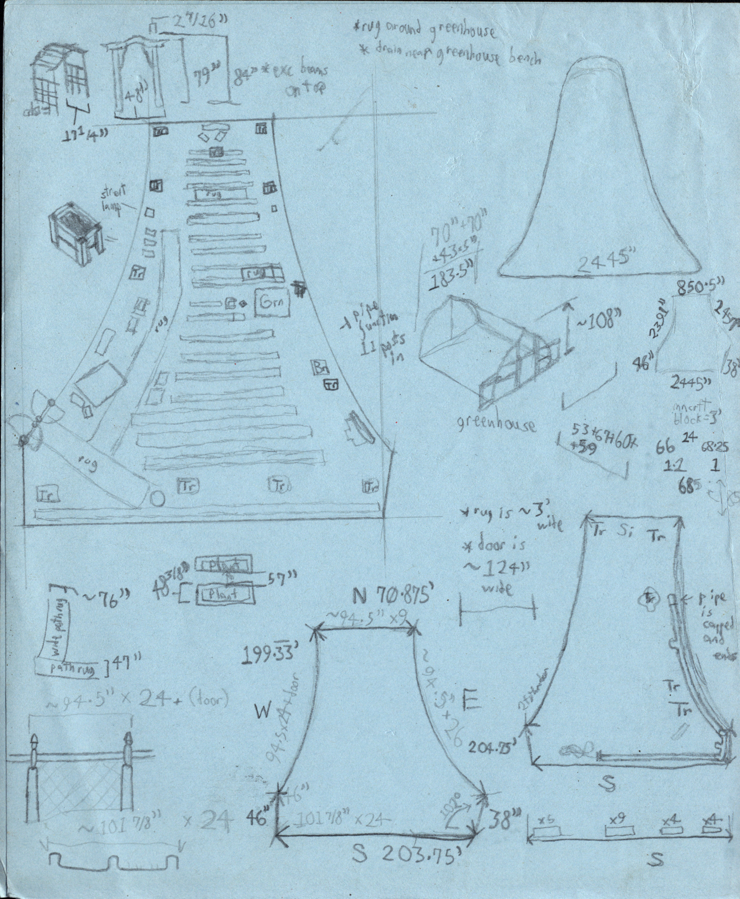

This report expounds upon my ideation of Pink Prospects, a small-scale hydroponic drip system
that I may develop within a community space, Pink Houses Community Farm. Pink Prospects is intended to improve
public awareness of hydroponics while also offering useful, culturally-desired crops that mightn’t be readily available.
To start, it will raise some species of amaranth/callaloo.
Though Pink Prospects will be the focus of this document, it will also briefly present some of my
other small-scale food system solutions that could incentivize composting, improve awareness of local food resources,
and widen the variety of crops in the neighborhood.
My neighborhood—East New York, Brooklyn, has been reported as one of the poorest in the area, and is also a food desert
with a high density of fast food chains. Yet paradoxically, there are several well-kept growing spaces within ten blocks
of me, and a good number of weekly food distributions.
Origin
My project took form as the teachings of Change Food for Good’s Intro to AgTech course and my own observations admixed.
I’ve regularly volunteered at several food pantries weekly over recent years, and love visiting Grow NYC’s Cypress Hills
farmstand as well. Access to food resources has improved here, but still seems disjointed. There are many great public
farms and families with prolific, passionately-kept gardens. Yet many people who need these services seem unaware of
their existence.
Additionally, some local composting services in our neighborhood have been defunded and terminated because of low or improper use.
I shared compost with the Cypress Hills GROWNYC Farmstand for most of the past two years, and formed great friendships with its attendants.
Yet there were increasingly many weeks when I was the only person to drop off scraps, even though the service was available all year.
Our course tasked us with trying to find a hydroponic solution to a food system issue. Some of the various public growing spaces in
the neighborhood may be able to foray into hydroponics to help draw interest to both their activities and the practice itself. That
could ultimately strengthen the community, food education, and give these organizations and services opportunities to cross promote.
[paraphrased]
Yeah, there's nothing here. If you realize you forgot to get dinner groceries on the way home, your only options are like,
Dunkin' Donuts or fast food."
-Sydul, a local librarian, personal interaction with author, Dec 20, 2024.
Within await some basics of maintaining a system like this and its plants
Considered Factors
A local, outdoor hydroponics system should be tuned to at least the following points:
Location and available space
- Systems indoors at home are generally safe and the easiest to access, but need artificial lighting.
- Outdoor systems may ask for more of your time and diligence for troubleshooting and maintenance.
- A community space still needs clearance for its own personnel and activity.
Environmental factors
- Are the conditions right for the welfare of personnel, crop, and the system itself?
- Does amaranth befit the climate and weather? Heavy wind can be an issue for tall crops.
Legal permission
- Would I even be allowed to establish this system?
- Some public locations may have regulation against it, or require permits and such.
Budget
- Can I procure everything needed to maintain this system within the projected $500?
- That must account for all system parts, seeds, nutrients, growing medium, and building/cleaning supplies
- Some repair/backup parts should be included as well, even for a short-term project
Sustainability
- These are the fundaments of how well and soundly my system and service may perform in the long term.
- Factors like the time your plants take to mature and volume of harvest yield can contribute.
- Encouraging others to try it for themselves is also valuable.
- For your operation to persist (especially if it expands,) you may need helpers, and you'll need
to inform them thoroughly and compensate them!
Benefits/Appeal
- These can resemble elements of sustainability, but are also nuanced.
- I could offer an edible crop, yet potentially lose favor if no guests want it.
*Thankfully, many of the people who asked about my project in this neighborhood love callaloo.
Documentation of procedures, safety, and plant health
- Logging your procedures well is a fine way to initiate others to hydroponics.
- Instructions should be thorough, but simple, and introduce a reader to necessary terms.
- If you don't monitor plant health, you'll be worse at tracing problems or repeating successes.
- As a system that develops edible plants, cleanliness is especially important in ALL plant operations and system maintenance,
even down to the types of plant containers and cleaning fluids you use.
Period of operation
- Operating seasonally limits volume of produce, yet growing year round requires more resources, development, and possibly personnel.
- You may need to relocate the system or become familiar with additional crops to function continuously.
- It could be prudent to scale the size and timing of your operation to the amount of time you're willing to allot.
- Pre-starting your seeds and growing from clones are ways to use your outdoor growing season more efficiently, but the latter
may require experience.
Plant casualties
- Even great farms and farmers account for a margin of loss. Not all seeds succeed.
- Crop failure can be a result of seed quality, care, illness, infestation, weather, or system neglect.
- Maladies may even have similar symptoms. It may be practical to know some common illnesses of your crop in advance.
Solar power
- This is a surprisingly approachable an option for my system. There are several inexpensive and trustworthy solar irrigation
pumps on the market.
- My system should be scaled and arranged for the relatively low and inconsistent power of such a system.
- There shouldn't be any tubing ascents beyond the pump head (maximum water lifting height) of my chosen unit.
- Many of these solar hydroponics pumps have a backup rechargeable battery. I should have two, and always try to keep one fully charged.
- The solar panel needs to be properly oriented for both my location and the season!
- Since the pump will be exposed to the elements, I need to know and understand its IP rating--how well it resists dust and water intrusion.
My Recommendations and Rationale
I planned this system at its initial small scale in respect to my inexperience and its power source. That extends to its seasonality. This
is equal parts a test of myself, the plants + hydroponics, and public interest.
To increase the worth of the project, I'd want it to inform the community, not just through exposure to hydroponics, but perhaps
a map that details where and when the various food pantries in our neighborhood distribute.
With experience, it may be possible to accelerate yield not only by expanding the system to grow more plants, but by growing
from cuttings! If successful, this bypasses the wait for fresh seeds to germinate. Additionally or alternaitvely, I may be able
to focus some of the off season on seed storage or starting instead.
Our class site visits were all highly informative, but so was consulting locals. My gardening neighbors, the Dixons, raise many plants,
including some types of amaranth. They taught me of its health benefits, repeat harvesting, and how easily it can spread. It may be best
to start by raising nonflowering amaranth species.
After all, Mrs. Dixon warned that
most of the amaranth growing in her garden wasn't planted.
It had been sown by wind or animals flying by. That's impressive, but must be monitored carefully in a public growing space.
There are several components to the problems I want to address.
Articles and findings like
these
indeed support that East New York is a food desert. With low spending power, healthier organizations may
simply be dissuaded from establishing presence here.
There also seems to be a general lack of public info on the composting process,
assuring that only homes with avid gardeners may easily learn of it. That lack of attention and misuse of the service
easily gets it demonetized, as I've personally witnessed.
It's especially disappointing since we have so many nice local farms.
As stated earlier, some of the public may be unaware of the free food distributions available to serve them.
While they're readily available, they may not be well-advertised. People who work in mornings or afternoons
may never chance upon them, or even have the opportunity to benefit from them if they do.
Learning of the existence, benefits, and hydroponic viability of callaloo/amaranth.
[September 2024]
Visiting and studying my nearest community farm.
[September + October 2024]
Seeing healthy amaranth plants (grown either in soil or with hydroponics) on our various class tours, especially at Oko
Farms and FarmOne. It seems to grow smaller in hydroponics, which may mildly decrease some risks, spacing requirements,
and material needs if true.
[October 2024]
This website assumed a more complete form.
[October 31, 2024]
We all presented our projects to our peers and instructors, which was relieving and constructive.
[November 2024]
Learning that a community meeting to pitch my project and request space for it was being held this month.
Circumstances forced me to miss it, but there may be another chance in January 2025.
[November 2024]
Community farm staff suggested I request an available room in a community center if I ever needed to grow indoors.
[November + December 2024]
I saw electric-powered, inflatable decorations at a public housing complex. This practically demonstrates
that NYCHA could support a small-scale, outdoor hydroponics system if it is planned
thoroughly, safe, and beneficial.
[December 2024]
Various enlightening interactions which affirmed this neighborhood to be a food desert and presented specific fruit
scarcities for me to later question and research.
Over our trips and my own outings, I've seen some variance in the height of amaranth plants. Though some are clearly of
different species or possibly at a different stage of life, I wonder if and how growing method and medium influences that.
Red amaranth in the soil of a neighbor family's garden
Red amaranth raised in soil at a rooftop farm, Brooklyn Grange
Red amaranth in an aquaponic system at Oko Farms. That is, in a system which jointly raises plants, fish, and
the microorganisms that support their collaboration.
Amaranth (non-red), indoors at Farm One, in hydroponics, under artificial lighting
There are a host of reasons why well-raised plants of the same species may have distinct heights when mature.
Some could be dwarf varieties bred for shortness, which could be more appealing in stacked indoor systems.
If I raise any amaranth, I'll be sure to compare them. It could clue me into which types of seeds are best to order.
To oversimplify, shorter plants would usually need less support, possibly less clearance between them, and perhaps not
scatter their seeds as broadly if pollinated by wind. Some may simply be better neighbors if grown with other
plants.
Having to defer many solutions that I couldn't incorporate hydroponics into, like seedkeeping, a traveling community seed bank, and a
composting incentive program
Likewise for several great suggestions and desires of my supporters. One of the Dixons suggested a program that teaches about the
various "wild greens" in our neighborhood and their uses. Wild greens are plants which are commonly regarded as weeds, yet can be
useful as food or medicine, and are readily available since they're hardy and grow easily.
The realization that dates and starfruit either aren’t very compatible with beginner hydroponics, take too long to yield, etc.
Having learned that Pink Houses Community Farm has no electrical power, I felt forced to use
a system that doesn’t need power, which wouldn’t have been in the spirit of this course or project.
The risk of this system being vandalized, stolen, or elsewise fiddled with, since it will be outdoors and exposed to nature
and the public.
Difficulty and indecision finalizing my farm system design, which has also manifested in other
elements of my course work since it’s so crucial.
The lack of electrical power at Pink Houses Community Farm eventually lead me to learn
of alternatives! There are relatively inexpensive
drip irrigation pumps
that should be great for a small system like this. Later, I was also told of another
alternative hydroponic irrigation system that doesn’t need electrical power at all!
I'd like to test it once I've taken more time to study it. There even exist
sun direction websites
to help me plan how to orient a solar panel.
My first choice(s) of crop wasn’t suitable for hydroponics of my inexperience, but I
learned that callaloo is perhaps an ideal starter crop. To list a few benefits, it is apparently
easy to grow hydroponically, drought tolerant, and accepts a wide range of growing zones.
It's also high in iron, fiber, and vitamins A and C. There are many species of amaranth/callaloo,
some of which flower, and in many cases, virtually all parts of the healthy plant case be used.
I've even read that the grains can be good feed for farm animals.
Better yet, surprisingly few people curious about my project dislike callaloo. I've yet to
try it myself, though. But I can't ignore that some individuals would only be interested
in select species of amaranth.
The aforementioned librarian, Sydul, would only want red amaranth.
If I realize this project, am competent in its maintenance, and ever want to extend its growing
season, community farm staff have suggested I request to use a spare room in nearby community center.
Furthermore, it may be possible to grow within the hoophouse at the community farm, or pivot to
cold-tolerant crops like cabbages when amaranth is out of season. However, that would require a more
complete understanding of the plant family's artificial lighting needs, and additional supplies.
To begin, here is a map view of several public growing spaces I
considered. There were around three other locations I pondered, but I won't include them all
for brevity.
I'm pleased and impressed that our neighborhood has so much growing space.
I ultimately settled for Pink Houses Community Farm. It's the closest of all, and thus swiftest
to reach for maintenance. It has passionate staff and several volunteers and visitors, so I know
my system would be seen. There are also many tools and conveniences available, including a hoophouse.
That's great for plants that love warmth and humidity.
I visited the farm for several consecutive days to measure the area and note its conditions and
features. With tape measure and sketchbook in tow, I took some loose measurements and produced sketches.
That way, if I were ever to model some part of the farm, I could at least give it realistic dimensions.
Where I couldn't measure curves, I used gate segment spans to help my estimates.
The numbered spots are the four locations in the community farm that seem best for my system.
wouldn't obstruct any other plants, but receives the least direct light.
is close to a water line and tools, but perhaps often shaded.
is near a water line and well lit. But the plants may deny light to shorter
ones if they grow particularly tall.
is a hoophouse (if not a greenhouse.) It gets excellent lighting, but doesn't
have direct water service, and is frequented by stray cats.

Only recently did my brainstorming and sketching finally lead me to a system design that seems adequate.
But now I must finally model it in Sketchup or Fusion 360. After that, I'd like to build a mock-up of it.
I want to grow no more than 3 or 4 plants simultaneously to begin. None of my research gives much mention to
amaranth being grown in a drip system, so I might opt to have some grown traditionally or in a simpler, separate
hydroponics system for comparison. I'd like for the plants to be 10-12" apart, but still relatively close
so that the pump needn't work so hard. The strength of the pump also places a limit on how high the plants
can be elevated compared to their reservoir (water/nutrient source.) Elsewise, there's a risk of blockage
or backflow.
Amaranth greatly favors sunlight and doesn't need much water when established, so I think a drip system
(which dispenses liquid precisely and conservatively) could excel.
The three files above were among my early note pages and failed
designs. But it was important to ponder and explore them, especially
the differences between different types of hydroponic systems. When I
thought I'd have to settle for one of the simplest types of systems,
I considered ease of transport as a feature.
This will be the basis of the design I model. A north
arrow is present since the orientation of the solar panel will be
crucial.
2d and 3d design
After extensive ungainly practice, I managed to bring the visual model
of my design to this state. It will be improved as I do in Sketchup or
other modeling programs. This system can be arranged in other ways,
and doesn't occupy much ground space since the electrical components
are all so simple. Since this is a drip system, I may put all of the
plant pots in foil containers that could catch any excess liquid from
the reservoir.
My dimensions and annotations are hidden in the images below since
they make the file hard to read. I now realize that viewers aren't
allowed to adjust/remove layers, see hidden objects, or place my
components for close viewing. But I'll still include
links to the
model
for now. If you view them, you can zoom or orbit to change which notes are visible and how they're positioned.
The item dimensions generally follow what you'll find on my materials list,
but some specifics (like the pump console) had to be estimated from videos.
Not quite yet...
My Assorted Gratitudes
Here are a few of the many individuals and groups who made it possible for me
to complete this project. In no order of contribution, I'd like to thank:
The Dixon family, with their inviting nature and immense gardening experience.
All of my classmates, teachers, and partners in Change Food For Good, with their
wealth of specialties and perspectives.
The staff and guests of Pink Houses Community Farm, who demonstrated to me how
well-minded and beloved the space and its services are.
Local library staff, for their continued curiosity, interest, and critique.
Simply existing in a reality that allows these flora and processes to exist.
Ways I'd Improve My Procedure
Simply becoming more experienced with and privy to all parts of developing a hydroponic system should help.
I’d try to be slightly less subject to my own criticism and put a design out when it was due. I might have had much more time to refine it and realize everything else I wanted to if I did. It was one of the most foundational projects.
Brainstorm one hydroponic system of several different types before the project begins, then simply adjust the one that's best for my project to site and crop specifications. It was difficult for me to focus on design as much as I wanted and truly exercise my creativity since I wanted to give all the other assignments proper time and not fall behind schedule again.
I did plenty of research, as is my nature, but should have sorted it all immediately from the start.
Revel in the fact that most assignments in our course were living documents / "works in progress."
Those with a similar task, know the following...
- You need solid procedures and failure contingencies in mind throughout the process, especially once your system is live. If you’re an absolute neophyte to working with hydroponics as I am, I’d suggest you either begin with a simple crop or a simple system design, then build to more demanding ones once you’re competent.
- Openly question available experts and instructors, yet also gain comfort doing your own research. E-mails and phone calls to local organizations can also be fruitful. If you’re actually going to build and tend the system yourself, be warned—it’ll constantly demand some of your time. Problems ignored and left to fester could kill your plants.
- Trace your understanding, especially if you're new to a concept! That is, assure that you know how you executed the parts of your project. That's one of the surest facets of learning, and may even grant you the capacity to better reproduce your experience.
- This project isn't over just because you submitted it, even after the presentation, and even if you don't intend to build it. You can still apply refinements.
My valuable insights from this course
My learnings from this course are vast, many, and likely to develop as I do. This project genuinely left me impressed with my neighborhood, from the Dixons' decades of horticultural passion and knowledge, to the wealth of urban farmspace that virtually surrounds me.
I initially had no intention of making my project real, but as I learned how much the community supported and would want it, I became driven to do more with it. I'm pleasantly surprised that callaloo seems to be such a
beloved and potent food, too.
The community
wants
to improve its resources.
It'd be rude to think my peers and teachers anything less than astounding. Several of them have existing agricultural experience, and even those that didn't have some fascination with agricultural technology or concern for the food system. I wouldn't be surprised
to see several of them become formidable activists in the future. I think we all did a great job of girding and charging one another.
All the science and procedure of soil-less farming drew a huge smile from me. I never expected an opportunity to see these rigors and considerations so intimately.
The bevy of ways that one can specialize or contribute to these fields is just as fascinating.
Again, Thank you, natural world, Change Food for Good, and all else that made this course possible.
During this project, each student had to connect a plant-identifying API (application programming interface) to identify
plants and their condition. It's a useful feature for anyone interested in plants or raising them. We applied some coding
to integrate it.
You can find it on this page.
In no order of priority:
More and hopefully more optimized images, especially of my contributors and some amaranth plants I've observed
Links to more of the assignments integral to this case study
Better navigation between sections, especially the longer ones... perhaps as sticky elements